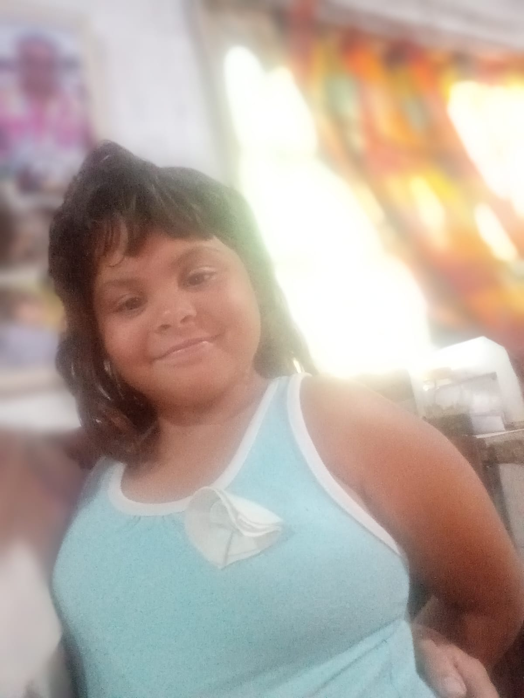

ella es jeny la primer mujer en la montaña
pocas horas despues se quedo sola por armar quilombo
quien lo pagase disputa axel y milei quien pagara el asado del finde
axel le dijo a miley que si el pudio el otro tambien y miley le respondio no hay plata
choque entre dos autos y una gorda,estudiante de css
el choque se produjo cuando la gorda cruzo sin mirar el el huevon del auto negro por putiar a la gorda se cruzo y choco al otro boludo

En busca de Luna: La mente detrás del mapa digital que está cambiando vidas
